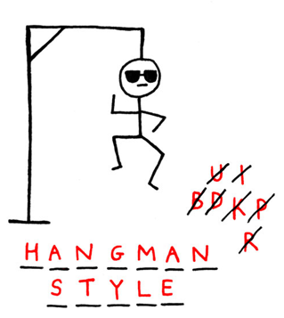
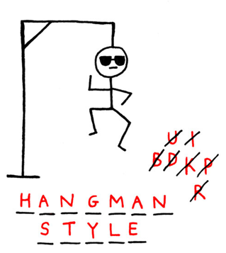

The HR team at “Atlas Labs” follows the Kimball Model to monitor employee metrics
and understand attrition factors. We used a snowflake schema with a central fact table storing Performance
Ratings and five dimension tables (Employee, EducationLevel, RatingLevel, SatisfiedLevel, and Date). The
“Overview” tab included measures like TotalEmployees, ActiveEmployees, and InactiveEmployees, allowing
us to calculate the % Attrition Rate. Our analysis focuses on diversity (age, gender, marital status,
ethnicity) and its impact on employee numbers and average salary. Notably, white employees receive the
highest average salary, while non-binary individuals constitute 8.5% of the workforce. By understanding
these demographics, we aimed to help Atlas Labs promote diversity and equitable opportunities. They also monitor
individual performance ratings and satisfaction to enhance employee retention.
 

In the initial stage, we define a list of possible words for the game. From this list, a random word is selected as the
secret word. The player is then prompted to input a letter. To ensure valid input, the program checks that the guess
is a single character. Throughout this process, proper documentation is maintained, and the code is optimized. Regular
commits and pushes to a GitHub repository help track progress. The second stage focuses on validating the players input.
We iteratively check whether the input is a valid guess. Additionally, the program verifies whether the guessed letter
is part of the randomly selected secret word. To facilitate these checks, we create functions that handle input
validation and word comparison. This stage ensures that the game operates smoothly and prevents incorrect or invalid
guesses. To enhance code organization and maintainability, we transition to an object-oriented paradigm. We create
two classes: Game and Hangman. The Game class initializes essential attributes, including the random word, the word
guessed so far, the number of letters in the word, the remaining lives, the word list, and the list of guessed letters.
The Hangman class defines methods for checking input validity and determining the outcome based on whether the guessed
letter is part of the secret word. This paradigm shift improves code readability and scalability. In the final stage,
we assemble all components. A function called play_game orchestrates the entire Hangman game. It combines the word
selection, input validation, and outcome determination. With this function, players can interact with the game
seamlessly. By following these stages, developers create an engaging and interactive Hangman experience that
challenges players to guess the secret word while avoiding the hangmans fate.

The company has received multiple product orders and created a summary table capturing Order ID, Stock Keeping Unit (SKU), Quantity, and
Sales Amount. This detailed analysis aims to provide granular insights for the Head of Sales. Managing direct expenses efficiently is
crucial, and the company investigates gross profit by subtracting the cost of goods sold from total sales revenue. The goal is to
maintain low production costs for a healthy bottom line. Visualizing trends between sales revenue and manufacturing costs using scatter
plots is essential.
The product manager seeks insights into product performance within the catalog. This analysis informs marketing strategies, guides
investments in new products, and enhances customer communications. Specifically, the evaluation focuses on female products sold to
supermarket retailers in 2021. The team compares sales amounts and enhances bar charts using Power BI’s Analytics pane to evoke an
emotional response from the audience. Additionally, they explore product performance across different retailer channels, emphasizing
total order quantities. Stacked bar charts categorize items ordered by channel and product type, while small multiples allow comparisons
across Franchise outlets for Hoodies & Sweatshirts, considering product colors and gender types.
The company tracks critical financial indicators: total sales amount (revenue), total cost of goods sold (COGS), and gross profit.
Visualizations using line and area charts reveal trends over time. While gross profit is essential, it doesn’t always correlate
directly with profit margin. The Chief Commercial Officer (CCO) emphasizes clear communication of insights, especially regarding the
need for total sales to consistently exceed costs across all products.
The company also investigates gross profit margin, aiming for a 70% target set by the executive team. Key Performance Indicators (KPIs)
help track overall performance, and the CCO focuses on comparing Total Orders and Total Returns to minimize returns.

Imagine standing at the base of this architectural marvel (Empire State building), ready to embark on a thrilling adventure with a friend. The rules are simple: you will
roll a dice 100 times, and each roll determines your fate. The dice is rolled and if a 1 or 2 thrown then descend one step, if 3, 4 or 5 thrown
then ascend one step, if lucky enough to throw a 6 then throw dice again and ascend that number of steps. A max function was used to stop going below the ground floor. The
next thing was to stop the accumulative score to go below zero (ground floor) which we did by incorporating a max() function. Beware! There is a 0.1% or 0.5% chance of
a treacherous fall down the stairs, forcing you to start anew from the ground floor.
We have made a bet to reach the 60th step after 100 throws. What are the odds of achieving this? We simulated the process 10k times. Using NumPys rand function we generated
die numbers (utilising a fixed seed to enable reproducibility). Each complete simulation represents one journey up the building, tracking the accumulative steps. Then we used
MatPlotLib to visual the random walks. to determine the odds we analysed the distribution of final step values from each simulation, displaying this on a Histogram. With the
jeopardy of complete crash to bottom. With a 5% jeopardy the chances of reaching 60 steps are 57.13% and if 1% jeopardy your chances rise to 77.63%.

We then presented a bar chart of countries GDP per Capita to enable comparison with others. The data provides an important discovery that USA has
significant higher Expenditure as %GDP and per capita. This questions healthcare efficiency and policy issues which need discussing. There are
only 4 countires above the health expenditure threshold of 14%. The next factor that indicated global growth and development was to investigate
mobile phone and internet usage. This was plotted on a combo chart and demonstrates that mobile phone grows much faster than internet in 3rd
world countries. The next insight found was that following negative economic growth a corresponding decline in interest rates occurred. Then
we investigated the impact of international tourism and has that changed over 2001-2012. UK spends more on international tourism than we make as
income. Businesses are more successful and find ease when the country has high GDP levels.
The club wanted to investigate the performance of their second row rugby players compared to the rest of the league players in similar positions.
The decision was made to track Carries, tackles, lineouts won during a game (average). Then displaying how many mins each player played and over
the total number of games.